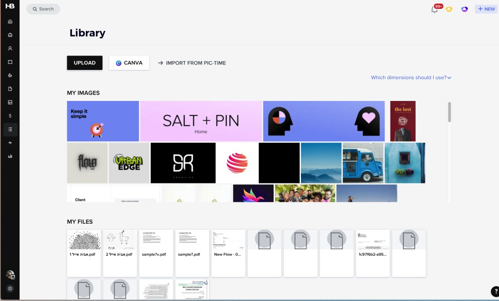
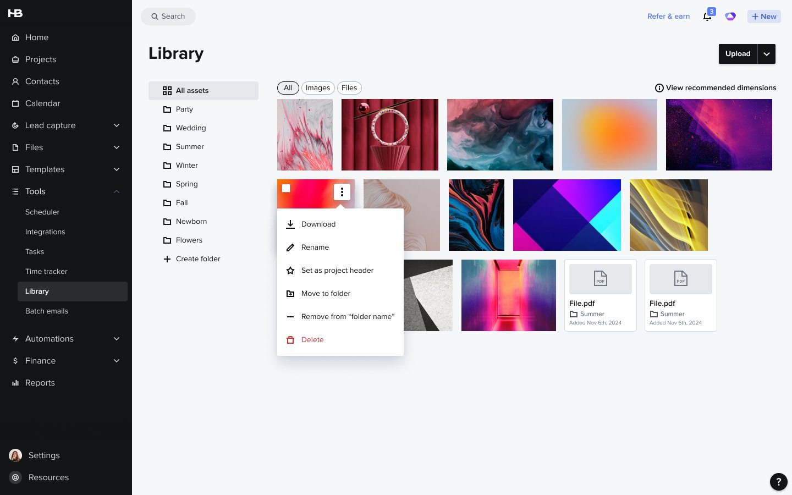
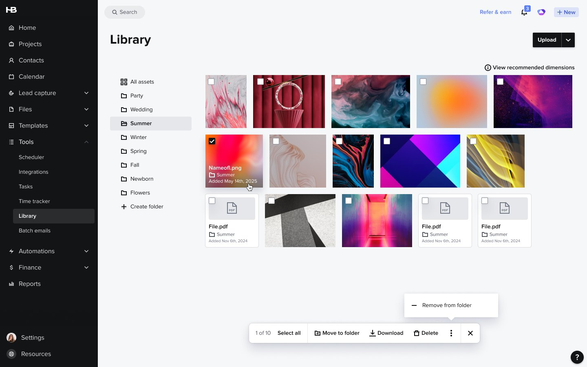
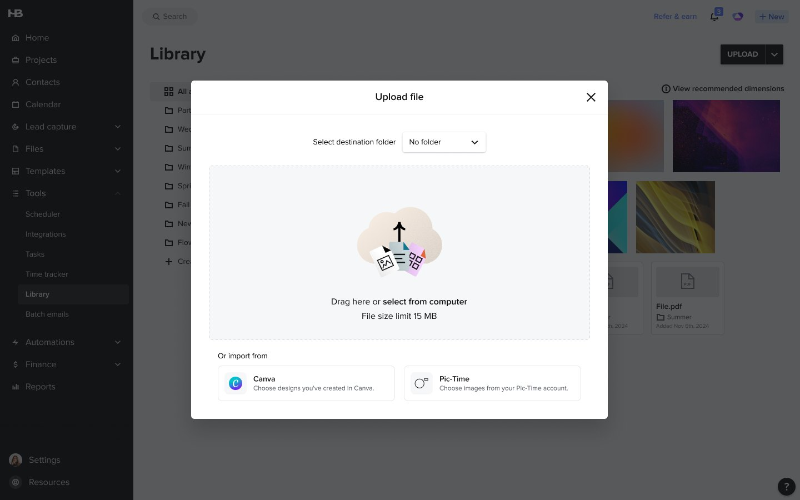
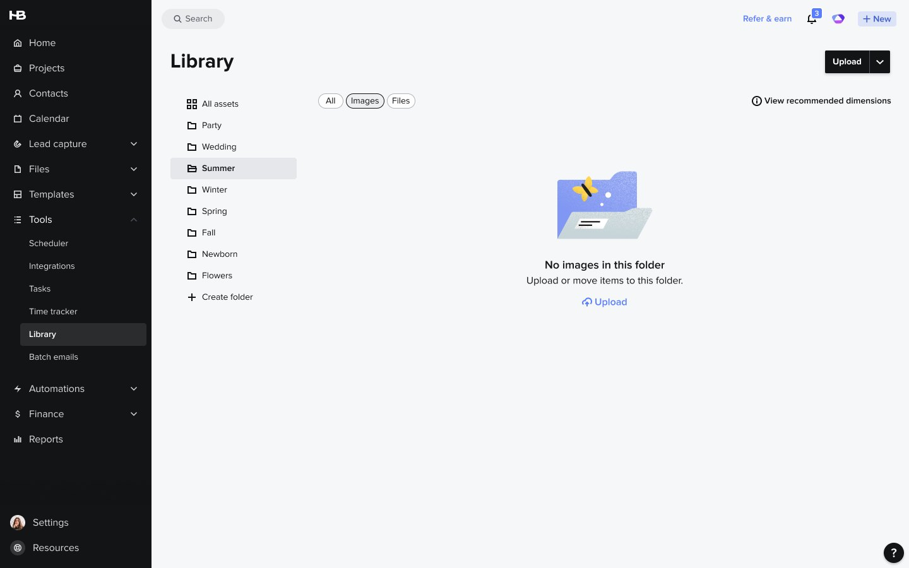
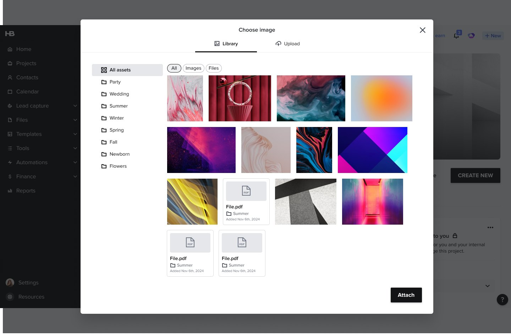
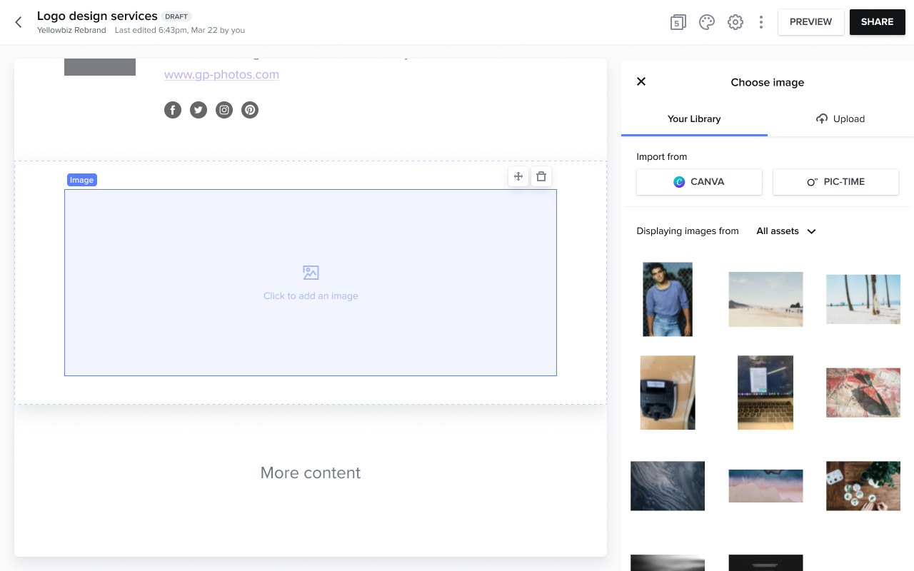
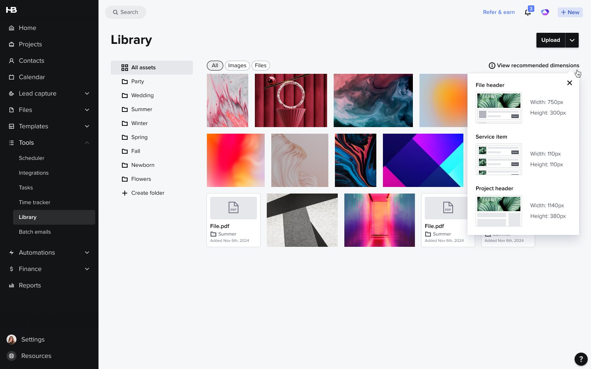

HONEYBOOK · IA · 2026
How do you bring order to a growing library of templates and files without adding friction to everyday use?
The shipped Library: folders in the left rail, All / Images / Files filter chips, and every asset labeled with the folder it lives in.
CONTEXT
The library was one unorganized, flat list. Users had to scroll through every image and file with no way to filter or group assets, and there was no folder, tag, or category to lean on. Finding one specific image became a time-consuming, frustrating process, and that friction compounded every time someone needed to reuse a template or asset.

Before: two flat strips, My Images and My Files, with nothing to group or filter by.
Source both numbers so they survive a "how do you know" question: where "#1 community-requested" comes from (community forum votes, support tickets, a feature-request board) and how "300 members a week" was measured and over what period.
One sentence on why it was prioritized now, after years of requests. What changed: a roadmap theme, a churn signal, a competitor, a quarter with capacity?
SCOPING
The brief set two jobs: create and manage folders so related images and files sit together instead of in one long scroll, and rename, delete, and reorder folders so the library keeps matching how a member works. Everything else was explicitly deferred. The MVP line landed here:
Who drew this line and how. Which items you argued for and lost, which you argued against, and what the cut was traded for (engineering weeks, a ship date). A reader is looking for one decision that was yours, with the reason.
Pick one deferred item that hurt (search is the obvious one, given the research below says findability depends on it) and say why it still didn't make the cut.
RESEARCH
There was no primary user research on this one. Before committing to folders, I did desk research (with AI assistance) on how people organize and retrieve files, and what it said shaped the scope:
The recommendation was a hybrid: one or two levels of folders for structure, tags for flexibility underneath, and search regardless. The first release took the part with the strongest evidence and the least maintenance burden, a single level of folders, and left tags and search on the list above.
Say plainly why there was no user research (timeline, team capacity, the request being unambiguous), and what you used instead: support tickets, community threads, usage data, a look at how Templates folders were already being used.
If you had any signal on how members would actually organize (client names? project types? seasons, as in the mock?), put it here. It's the difference between "the internet says folders" and "our members organize by X".
PROCESS
I modeled the new folders on the pattern members already knew from Templates, so the mental model wouldn't be new twice. The harder part wasn't the folder concept, it was consistency: the Library opens from seven separate places across the product, from the Tools tab to an email attachment picker to a Smart File thumbnail, and folders needed to behave identically in every one of them.
I designed the model and a menu covering the everyday actions (download, rename, set as project header, move to folder, remove from folder, delete) so reorganizing didn't mean touching every item one at a time. Selecting several items brings up the same actions as a floating bar, with "remove from folder" only offered when you're inside one.

The per-asset menu. Folder actions sit with the actions members already used, not in a separate mode.

Bulk actions: check items, then move, download, or delete them together. "Remove from folder" only appears inside a folder.

Upload with a destination folder, so files land organized instead of being sorted afterwards.

Empty folder state, filtered to images. The next action is the message.
Name the seven entry points. The claim is strong; a list makes it checkable (Library page, Choose image modal, the Smart File builder panel, email attachment picker, ...).
One rejected alternative with a reason. Candidates from the brief: drag-and-drop to move files (deferred, why?), a folder picker inside "Move to folder", folders as a filter chip instead of a rail. Show a sketch or a Figma frame if one exists.
Anything that changed between design and ship: what engineering pushed back on, what got simplified.
WHAT SHIPPED
The same folder model wherever the Library opens: on its own page under Tools, in the "Choose image" modal, and in the Smart File builder's side panel, where "Displaying images from" filters by folder without leaving the canvas.


Three of the entry points. Click a thumbnail to switch, click the large image to enlarge.

The old "Which dimensions should I use?" link became a popover showing where each size is used.
Confirm the recommended-dimensions popover was part of this release (it sits in the same Figma frame). If it was a side fix, say so in one line; if it wasn't yours, drop it.
Screenshots of the other four entry points if they exist, or one line naming them.
OUTCOME
Shipped a folder system with bulk move and organize actions, rolled out in stages across the Library's seven entry points: internally first, then to 20% of members, then 30%, then everyone including trialers. I left HoneyBook as the rollout completed, so there are no post-release numbers here.
The brief's hypothesis was that folders, clearly surfaced, would improve perceived ease of navigation, cut time spent looking for files, and lift satisfaction with the Library. Those are the measures the release was set up to be judged on.
Rollout dates for each stage, and how long each held before widening.
Any early signal you can source, even qualitative: support-ticket volume on "can't find my file", community reactions, the share of members who created at least one folder in the first weeks (a former colleague may be able to pull this). If nothing is available, leave the paragraph above as it is; "shipped as I left, no data" is a legitimate ending. Don't dress it up.
What you'd have measured, concretely: folder creation rate, share of uploads that pick a destination folder, time-to-attach in the builder. Naming the metrics shows you'd have closed the loop.
LOOKING BACK
One unsentimental paragraph. What you'd redo: pushing search into the first release, testing the seven-entry-point consistency with members before shipping, choosing a rail over chips, anything you learned from the staged rollout.